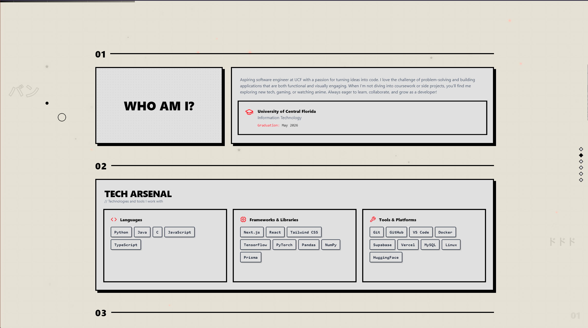
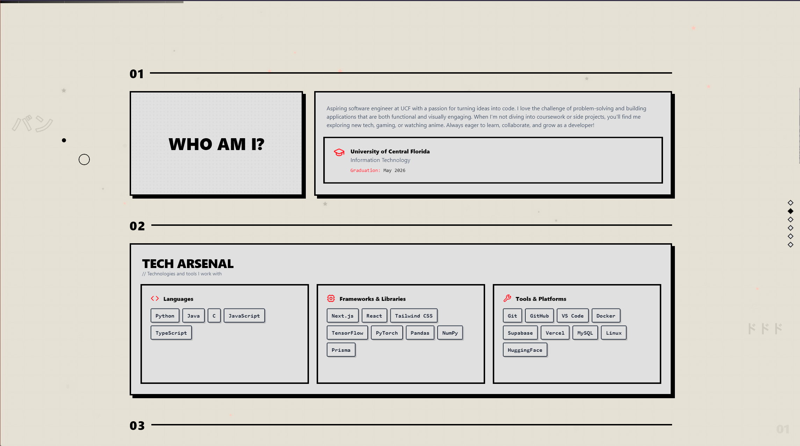

Description
Personal Portfolio V2 is a modern, single-page portfolio built with a component-driven React stack. It highlights a hero section with animated background effects, an about section, featured projects with 3D/interactive cards, a blog, and a resume page. The codebase emphasizes reusable UI components, subtle micro-interactions, and accessible responsive layouts. This project serves as a living resume to showcase design decisions, frontend engineering skills, and small animation experiments.
Live site: thedhruv.dev
 
